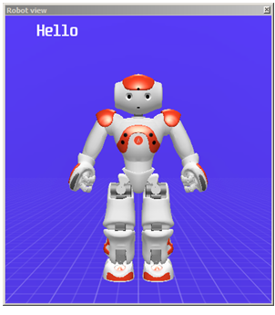

It also shows the sentences currently said by the robot.
It is updated as soon as you move a joint:
Limitations: The torso of the robot is static. It is the reference of this 3D view. The limbs and the head of the robot moves around the torso which does not move. So even if your real robot falls over, you will not see it lied down in the 3D view. You will only see the relative position of its joints.
If you are connected to a Simulated robot, you can change the model and the hardware version of the robot:
In case of technical issue with your computer, disturbing the display, you can deactivate the 3D view:
This option replaces the dynamic view by a static one.
For further details, see Choregraphe Preferences.
You can opt for another way of moving joints, the Forward kinematics mode - Experimental:
For further details, see Choregraphe Preferences.
When activated, this mode allows you to directly move the joints in the Robot view.
Each joint can be moved by dragging one of the wheels appearing round the joints.